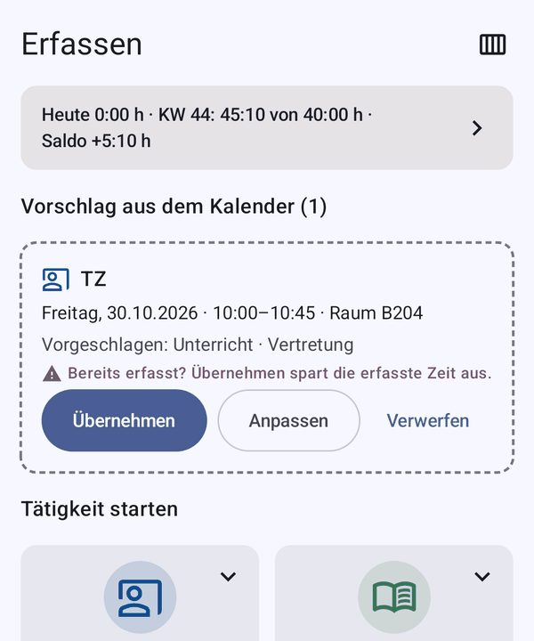
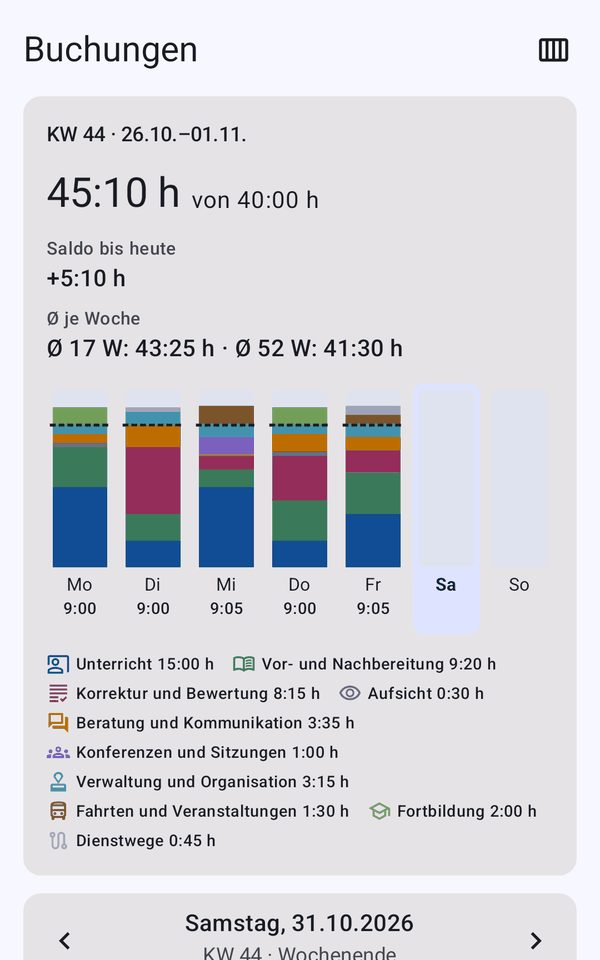
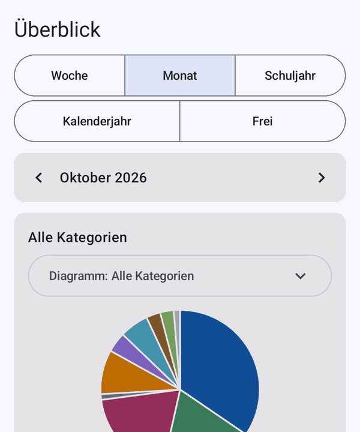
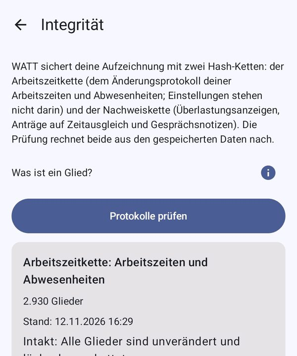
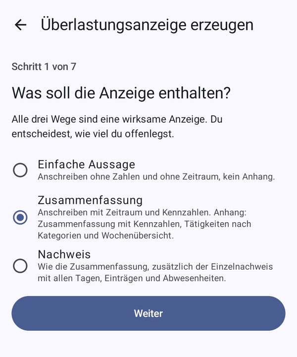

Erfassen
- Timer mit einem Tipp, Vergessenes trägst du nach
- Unterricht bucht sich aus deinem Stundenplan – auch per Kalenderlink, etwa von WebUntis
- Widget und Kurzbefehle, ohne die App zu öffnen
WATT ist die Arbeitszeit-App für verbeamtete Lehrerinnen und Lehrer. Du erfasst deine Arbeit mit einem Tipp, siehst Ist und Soll nach den Regeln deines Landes und hast Nachweise, wenn es zu viel wird.
Für Android 8 oder neuer. Fürs iPhone gibt es WATT noch nicht.

Vorbereitung, Korrektur, Konferenzen, Elterngespräche und Schulfahrten kommen dazu – und werden bis heute kaum erfasst. WATT macht deine ganze Arbeitszeit sichtbar. Für dich, nicht für andere.
Du siehst schwarz auf weiß, wie viel du arbeitest und wofür deine Zeit draufgeht. Das hilft gegen Selbstzweifel und gegen Vorurteile.
Du erkennst, wann es zu viel wird – und kannst dir guten Gewissens Feierabend gönnen, wenn dein Soll erfüllt ist.
WATT unterstützt dich bei einer Überlastungsanzeige: mit dem Anschreiben und, wenn du willst, mit Nachweisen.
Noch mehr Gründe, kurz und knapp: Warum WATT? (PDF)
Funktionen
Erfassen, auswerten, dokumentieren, handeln – alles in einer App.




Alle Funktionen Schritt für Schritt: Handbuch (PDF) · Funktionsüberblick (PDF)
Deine Daten
Was du in WATT erfasst, liegt verschlüsselt auf deinem Gerät. Niemand sonst bekommt es zu sehen – auch der Entwickler nicht.
Kein Konto, kein Server, keine Werbung, kein Tracking.
Zugang nur per Fingerabdruck, Gesicht oder Gerätesperre. Auf dem Sperrbildschirm erscheinen nie Tätigkeiten oder Werte.
Keine Vergleiche, keine Rankings, kein Dashboard für die Schulleitung. WATT ist für dich – nicht für Dienstgeräte und nicht auf Anordnung.
Ferientermine von der KMK und dein Stundenplan per Kalenderlink. Aus WATT werden dabei keine Daten übertragen.
Was das Gerät verlässt – Sicherung, Export oder Anzeige – entscheidest du. Datenschutzerklärung der App
Wochenarbeitszeit, Pflichtstunden, Teilzeit, Ermäßigungen nach Alter und Schwerbehinderung, Urlaub, Ferien und Feiertage: WATT rechnet dein persönliches Soll – für verbeamtete Lehrkräfte aller Schularten. Der Vorbereitungsdienst wird auch unterstützt.
Hamburg ist nicht dabei.
Herunterladen
WATT gibt es kostenlos bei Google Play, für Android 8 oder neuer. Ohne Konto, ohne Werbung, ohne Abo.
Schon im Test dabei? Dann bekommst du WATT ab jetzt als normales Update aus dem Play Store. Deine Daten bleiben, wie sie sind. Die Gruppe „WATT Tester“ kannst du verlassen.
Fehler, Fragen, Wünsche? Schick sie direkt aus der App: „Mehr → Hilfe → Kontakt“.
iPhone? Gibt es leider noch nicht. Ist das Interesse groß genug, kommt eine iPhone-Version in Betracht – schreib gern eine E-Mail.
Unterlagen
Gute Gründe, die eigene Arbeitszeit zu erfassen – kurz und knapp, eine Aussage je Folie.
Alle Funktionen Schritt für Schritt, mit Bildern und häufigen Fragen. Dasselbe Handbuch steht in der App unter „Mehr → Hilfe“.
Du hast einen Export oder Aktenauszug aus WATT bekommen? So prüfst du ihn unabhängig.
Für verbeamtete Lehrerinnen und Lehrer aller Schularten in 15 Ländern; der Vorbereitungsdienst wird auch unterstützt. Hamburg ist nicht dabei. Angestellte Lehrkräfte können WATT nutzen; Rechenregeln und Anschreiben folgen aber dem Beamtenrecht, für sie gilt der Tarifvertrag (TV-L).
WATT ist für deine private Aufzeichnung auf deinem eigenen Gerät gedacht, nicht für Dienstgeräte. Eine Nutzung auf Anordnung von Dienstherr oder Schule ist nur mit Genehmigung des Anbieters in Textform erlaubt. Näheres steht in den Nutzungsbedingungen.
Das können wir nicht zusagen. WATT ist eine Selbstaufzeichnung: Die Technik macht sichtbar, wann erfasst wurde und ob danach etwas geändert wurde – nicht, ob die Angaben stimmen. WATT ersetzt keine Rechtsberatung.
WATT selbst nicht. Quelloffen ist die Prüf-App WATTest; Datenformat, Schemas und die Technische Erläuterung sind veröffentlicht. Mehr dazu unter Für Prüfende.
Schreib gern.